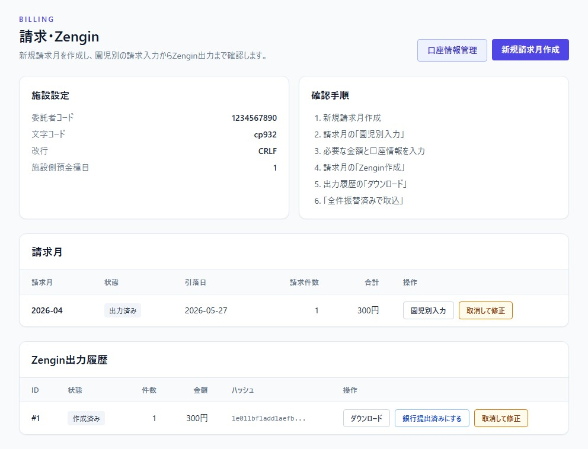
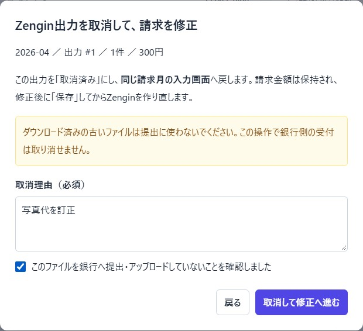
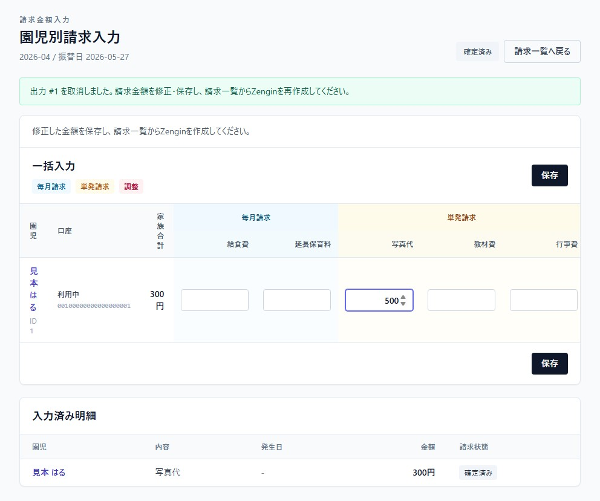
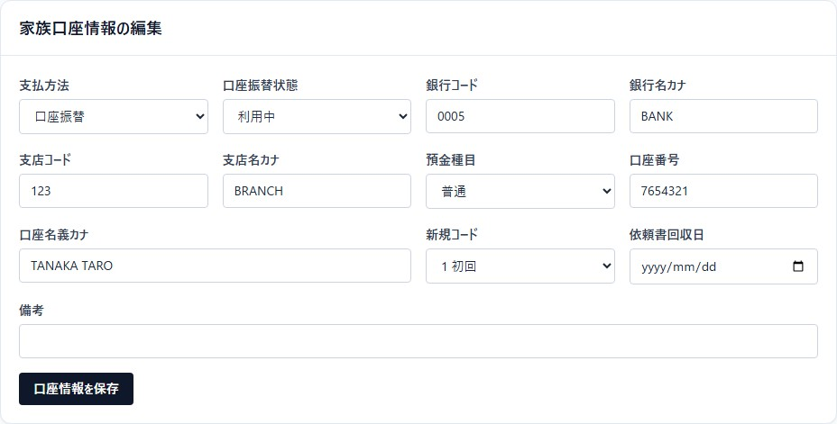
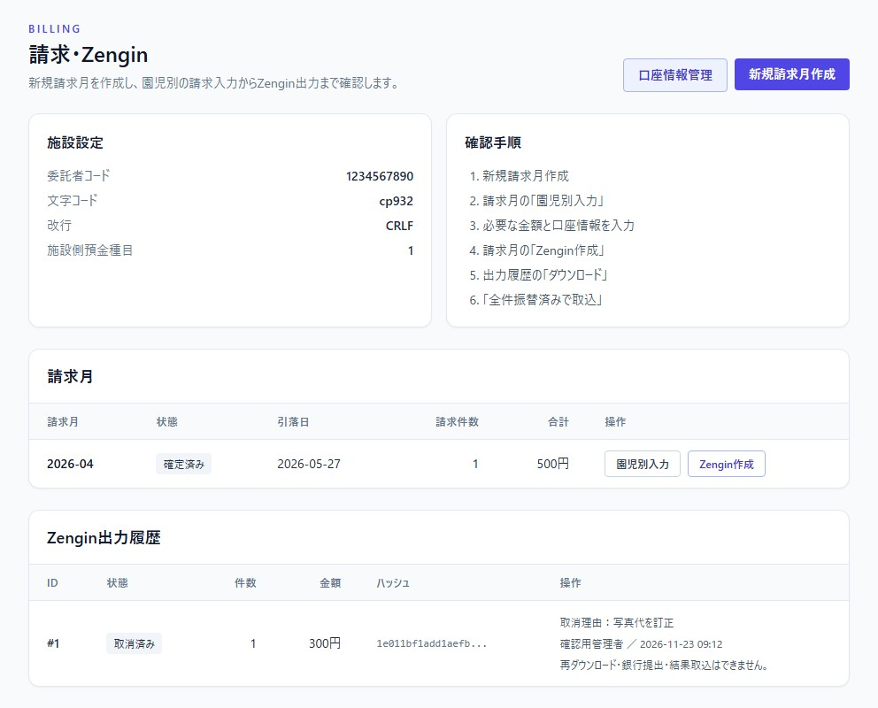
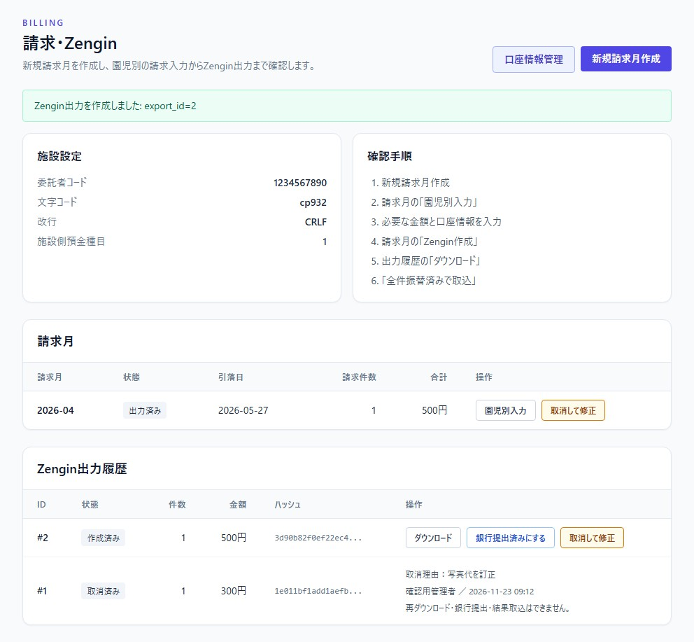

請求を取消して修正する・口座情報を保存する
Zengin作成後でも、銀行へ提出する前で取消条件を満たしていれば、管理者が同じ月の請求を修正できます。口座情報の管理は、管理者または請求・口座情報管理権限を持つ職員が行います。
2026年11月23日更新。画面の人物・記録はすべて架空です。画像を押すと拡大できます。
1請求月と出力を確かめる
職員メニューの「請求入力」を開き、対象の月とZengin出力を確認します。管理者に「取消して修正」が表示されている場合、その出力の確認画面を開けます。
銀行に提出済みのファイルは、この操作で銀行側から取り消せません。銀行提出履歴・結果取込・支払済み明細など、取消対象外の状態では修正解除できません。

2理由と銀行未提出を確認して取り消す
「取消して修正」を押し、対象月・出力を見直します。取消理由を記入し、実際に銀行へ提出していないことを確認してチェックを付けます。
「戻る」なら取消しません。「取消して修正へ進む」を押すと出力を取り消し、同じ月の園児別入力へ進みます。

3金額を直して保存する
対象の園児と費目を確認し、編集できる欄の金額を修正して「保存」を押します。画像は写真代を300円から500円へ直す例です。入力中は、保存済みの合計や明細が元の金額のままの場合があります。
自動転送された明細など、直接変更できない欄は取消後も編集できません。該当する元の処理を確認してください。保存せずに画面を離れると入力中の変更は反映されません。

4家族の口座情報を確認・保存する
「園児別入力」の「請求詳細」、または請求一覧の「口座情報管理」から対象を開きます。「家族口座情報の編集」で支払方法、口座振替状態、銀行・支店、口座種別・番号・名義、新規コード、受領日、備考などの欄を確認します。
口座は家族単位です。対象の園児と家族を確かめて「口座情報を保存」を押し、開き直して保存内容を確認します。入力だけでは保存されません。権限がない場合は管理できる職員へ依頼してください。

5保存した内容でZenginを再作成する
「請求一覧へ戻る」で対象月を確かめ、「Zengin作成」を押します。新しい出力の作成日時・金額と、旧出力が「取消済み」になったことを確認してください。
旧出力の履歴には元の金額・取消理由・操作した職員などが残ります。取消済みの出力は再利用できません。必要なファイルは新しく作成した出力から取得します。

